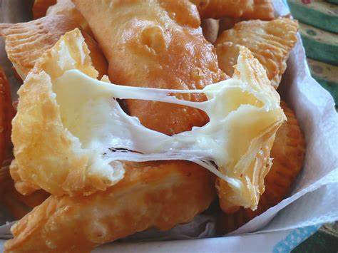
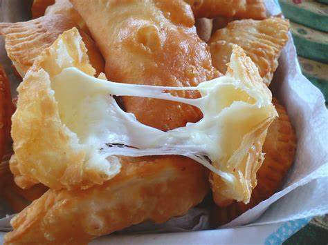

-
- -Queso (puede ser queso fresco, queso blanco, queso crema, o una mezcla de quesos)
- -Opcionales: hierbas frescas (como albahaca o cilantro)
- -Harina de trigo
- -Manteca (o mantequilla)
- -agua y sal
Empanada de jamon
Ingredientes para el relleno de empanada de queso:
Ingredientes para la masa:
- -Cortar el queso en trozos pequeños.
- -Opcionales: agregar hierbas frescas al queso.
- -Mezclar harina con manteca, agua y sal hasta obtener una masa homogénea.
- -Dejar reposar la masa en la nevera.
- -Estirar la masa y cortar círculos.
- Colocar porciones de queso en el centro de cada círculo.
- -Doble la masa, sellando los bordes con un tenedor.
- -Hornear las empanadas hasta que estén doradas.
Elaboracion
Preparar el relleno:
Preparar la masa:
- Armar las empanadas: